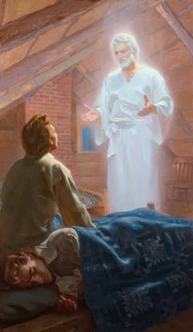

A seer, a translator, a prophet, and an apostle of Jesus Christ

Let the inhabitants of the earth rejoice, for the heavens are no longer sealed. In a day of great wickedness and apostasy, the Lord God hath spoken from the heavens unto His servant Joseph Smith, Jun. As declared in the Articles and Covenants of the Church, God called upon him and gave unto him commandments, revealing that he should be a seer, a translator, a prophet, and an apostle of Jesus Christ.
The Lord hath chosen the weak things of the world to confound the mighty and to bring to pass His righteous purposes in the winding up scene of this world.
In the spring of the year, while in a state of great distress over the welfare of his immortal soul and the contentions among the various sects of religion, the young Joseph Smith retired to the woods to seek wisdom from the Almighty. Let the following words from his own history bear witness of the glorious visitation he received:
"I cried unto the Lord for mercy for there was none else to whom I could go and to obtain mercy and the Lord heard my cry in the wilderness and while in the attitude of calling upon the Lord in the 16th year of my age a piller of fire light above the brightness of the sun at noon day come down from above and rested upon me and I was filled with the spirit of god and the Lord opened the heavens upon me and I saw the Lord and he spake unto me saying Joseph my son thy sins are forgiven thee. go thy way walk in my statutes and keep my commandments behold I am the Lord of glory I was crucifyed for the world that all those who believe on my name may have Eternal life." — History, circa Summer 1832